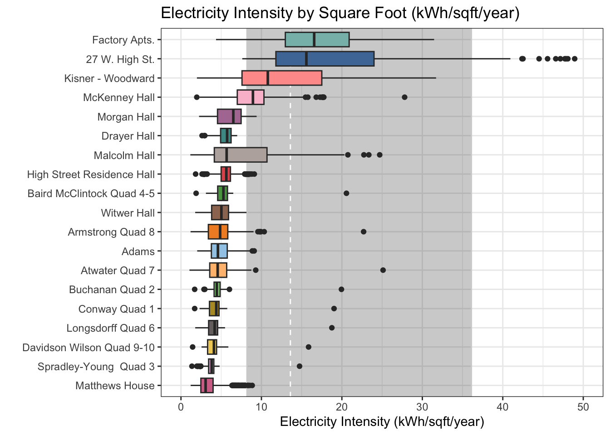
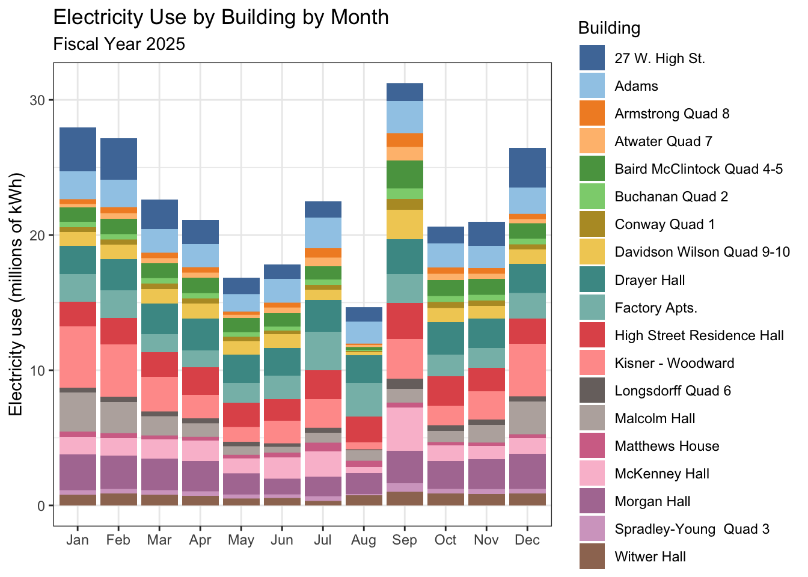

Last updated: 2026-03-23
Checks: 7 0
Knit directory: dickinson_power/
This reproducible R Markdown analysis was created with workflowr (version 1.7.2). The Checks tab describes the reproducibility checks that were applied when the results were created. The Past versions tab lists the development history.
Great! Since the R Markdown file has been committed to the Git repository, you know the exact version of the code that produced these results.
Great job! The global environment was empty. Objects defined in the global environment can affect the analysis in your R Markdown file in unknown ways. For reproduciblity it’s best to always run the code in an empty environment.
The command set.seed(20260107) was run prior to running
the code in the R Markdown file. Setting a seed ensures that any results
that rely on randomness, e.g. subsampling or permutations, are
reproducible.
Great job! Recording the operating system, R version, and package versions is critical for reproducibility.
Nice! There were no cached chunks for this analysis, so you can be confident that you successfully produced the results during this run.
Great job! Using relative paths to the files within your workflowr project makes it easier to run your code on other machines.
Great! You are using Git for version control. Tracking code development and connecting the code version to the results is critical for reproducibility.
The results in this page were generated with repository version 1a80058. See the Past versions tab to see a history of the changes made to the R Markdown and HTML files.
Note that you need to be careful to ensure that all relevant files for
the analysis have been committed to Git prior to generating the results
(you can use wflow_publish or
wflow_git_commit). workflowr only checks the R Markdown
file, but you know if there are other scripts or data files that it
depends on. Below is the status of the Git repository when the results
were generated:
Ignored files:
Ignored: .DS_Store
Ignored: .Rhistory
Ignored: .Rproj.user/
Ignored: analysis/.DS_Store
Ignored: analysis_to-fix/.DS_Store
Ignored: data/.DS_Store
Ignored: data/FY25 Main Meter Data.xlsx
Ignored: data/building_list_FY25_updated.xlsx
Ignored: data/graph_data_life_exp.csv
Ignored: data/housing_counts.csv
Ignored: keys/.DS_Store
Ignored: output/annual_kwh.csv
Ignored: output/building_check.csv
Ignored: output/building_check.xlsx
Ignored: output/daily_kwh.csv
Ignored: output/kwh_academic_2026-03-16.csv
Ignored: output/kwh_academic_2026-03-17.csv
Ignored: output/kwh_academic_2026-03-18.csv
Ignored: output/kwh_academic_2026-03-22.csv
Ignored: output/kwh_academic_2026-03-23.csv
Ignored: output/kwh_annual.csv
Ignored: output/kwh_annual_2026-03-04.csv
Ignored: output/kwh_annual_2026-03-12.csv
Ignored: output/kwh_annual_2026-03-16.csv
Ignored: output/kwh_annual_2026-03-17.csv
Ignored: output/kwh_annual_2026-03-18.csv
Ignored: output/kwh_annual_2026-03-22.csv
Ignored: output/kwh_annual_2026-03-23.csv
Ignored: output/kwh_annual_20260225.csv
Ignored: output/kwh_annual_20260226.csv
Ignored: output/kwh_daily.csv
Ignored: output/kwh_daily_2026-03-04.csv
Ignored: output/kwh_daily_2026-03-12.csv
Ignored: output/kwh_daily_2026-03-16.csv
Ignored: output/kwh_daily_2026-03-17.csv
Ignored: output/kwh_daily_2026-03-18.csv
Ignored: output/kwh_daily_2026-03-22.csv
Ignored: output/kwh_daily_2026-03-23.csv
Ignored: output/kwh_daily_20260225.csv
Ignored: output/kwh_daily_20260226.csv
Ignored: output/kwh_main_annual.csv
Ignored: output/kwh_main_daily.csv
Unstaged changes:
Modified: analysis/data_wrangling_final.Rmd
Modified: analysis/main_meter_model.Rmd
Modified: analysis/main_meter_regression.Rmd
Modified: keys/meter_building_key.csv
Note that any generated files, e.g. HTML, png, CSS, etc., are not included in this status report because it is ok for generated content to have uncommitted changes.
These are the previous versions of the repository in which changes were
made to the R Markdown
(analysis/PS05_prelim_results_Res-Hall_L.Rmd) and HTML
(docs/PS05_prelim_results_Res-Hall_L.html) files. If you’ve
configured a remote Git repository (see ?wflow_git_remote),
click on the hyperlinks in the table below to view the files as they
were in that past version.
| File | Version | Author | Date | Message |
|---|---|---|---|---|
| Rmd | fd298ee | maggiedouglas | 2026-03-15 | put Liv and Claire’s results back |
| html | fd298ee | maggiedouglas | 2026-03-15 | put Liv and Claire’s results back |
library(tidyverse)
library(DT)
library(paletteer)annual <- read.csv("./output/kwh_annual_2026-03-04.csv")
str(annual)
cost_conversion <- 0.08138507
ghg_conversion <- 0.30082405 / 1000
annual_large_res <- annual %>%
filter(type == "Res Hall - L") %>%
mutate("Cost - $" = round(kwh_corr * cost_conversion, digits = 2),
"CO2e - MT" = round(kwh_corr * ghg_conversion, digits = 2),
"kWh per sqft" = round(kwh_corr/sqft, digits = 2),
"kWh per person" = round(kwh_corr/occupants, digits = 2),
"Days of data (%)" = round(days_perc, digits = 2),
"kWh" = round(kwh, digits = 2),
kWh_corr = round(kwh_corr, digits = 2),
"Meter" = meter,
"Building" = NAME) %>%
arrange(desc(kwh_corr)) %>%
select("Meter", "Building", "Days of data (%)", "kWh", "kWh_corr", "sqft", "kWh per sqft", "kWh per person", "Cost - $", "CO2e - MT")
str(annual_large_res)
summary(annual_large_res)daily <- read.csv("./output/kwh_daily_2026-03-04.csv")
str(daily)
daily_large_res <- daily %>%
filter(type == "Res Hall - L") %>%
mutate(date = ymd(date),
month = month(date, label = TRUE),
day = wday(date, label = TRUE)) %>%
mutate(kwh_tot_yr = kwh*365,
kwh_sqft = kwh_tot_yr/sqft,
kwh_person = kwh_tot_yr/occupants)
str(daily_large_res)
summary(daily_large_res)datatable(annual_large_res, filter = "top", rownames = FALSE, caption = "Large Residence Halls Summary")ggplot(daily_large_res, aes(fct_reorder(NAME, kwh_sqft, median), y = kwh_sqft,
fill = NAME)) +
annotate("rect", xmin=-Inf, xmax=Inf, ymin=8.2, ymax=36.1,
color="lightgrey", alpha= 0.3) +
geom_hline(yintercept=13.6, linetype="dashed", color="white") +
geom_boxplot() +
ylim(0,50) +
theme_bw() +
theme(legend.position = "none") +
scale_fill_paletteer_d("ggthemes::Tableau_20") +
labs(x = "",
y = "Electricity Intensity (kWh/sqft/year)",
title = "Electricity Intensity by Square Foot (kWh/sqft/year)") +
coord_flip()
| Version | Author | Date |
|---|---|---|
| fd298ee | maggiedouglas | 2026-03-15 |
ggplot(daily_large_res, aes(x= month, y= kwh/(10^4), fill = NAME)) +
geom_col(position = "stack") +
theme_bw() +
scale_fill_paletteer_d("ggthemes::Tableau_20")+
labs(x = "",
y = "Electricity use (millions of kWh)",
fill = "Building",
title = "Electricity Use by Building by Month",
subtitle = "Fiscal Year 2025")
| Version | Author | Date |
|---|---|---|
| fd298ee | maggiedouglas | 2026-03-15 |
Claire:
Liv:
Data Issues:
There are periods of time when a building meter goes offline, leading to a lot of NA values, then a very high value when the building comes back online. For now, we are adjusting the x-axis limit of the graph to better show the difference between buildings. Note that this means we have removed a lot of the outliers. Other than that, there were no issues.
sessionInfo()R version 4.5.2 (2025-10-31)
Platform: x86_64-apple-darwin20
Running under: macOS Ventura 13.7.8
Matrix products: default
BLAS: /Library/Frameworks/R.framework/Versions/4.5-x86_64/Resources/lib/libRblas.0.dylib
LAPACK: /Library/Frameworks/R.framework/Versions/4.5-x86_64/Resources/lib/libRlapack.dylib; LAPACK version 3.12.1
locale:
[1] en_US.UTF-8/en_US.UTF-8/en_US.UTF-8/C/en_US.UTF-8/en_US.UTF-8
time zone: America/New_York
tzcode source: internal
attached base packages:
[1] stats graphics grDevices utils datasets methods base
other attached packages:
[1] paletteer_1.7.0 DT_0.34.0 lubridate_1.9.5 forcats_1.0.1
[5] stringr_1.6.0 dplyr_1.2.0 purrr_1.2.1 readr_2.2.0
[9] tidyr_1.3.2 tibble_3.3.1 ggplot2_4.0.2 tidyverse_2.0.0
[13] workflowr_1.7.2
loaded via a namespace (and not attached):
[1] sass_0.4.10 generics_0.1.4 prismatic_1.1.2 stringi_1.8.7
[5] hms_1.1.4 digest_0.6.39 magrittr_2.0.4 timechange_0.4.0
[9] evaluate_1.0.5 grid_4.5.2 RColorBrewer_1.1-3 fastmap_1.2.0
[13] rprojroot_2.1.1 jsonlite_2.0.0 processx_3.8.6 whisker_0.4.1
[17] rematch2_2.1.2 ps_1.9.1 promises_1.5.0 httr_1.4.8
[21] crosstalk_1.2.2 scales_1.4.0 jquerylib_0.1.4 cli_3.6.5
[25] rlang_1.1.7 withr_3.0.2 cachem_1.1.0 yaml_2.3.12
[29] otel_0.2.0 tools_4.5.2 tzdb_0.5.0 httpuv_1.6.16
[33] vctrs_0.7.1 R6_2.6.1 lifecycle_1.0.5 git2r_0.36.2
[37] htmlwidgets_1.6.4 fs_1.6.7 pkgconfig_2.0.3 callr_3.7.6
[41] pillar_1.11.1 bslib_0.10.0 later_1.4.8 gtable_0.3.6
[45] glue_1.8.0 Rcpp_1.1.1 xfun_0.56 tidyselect_1.2.1
[49] rstudioapi_0.18.0 knitr_1.51 farver_2.1.2 htmltools_0.5.9
[53] labeling_0.4.3 rmarkdown_2.30 compiler_4.5.2 getPass_0.2-4
[57] S7_0.2.1